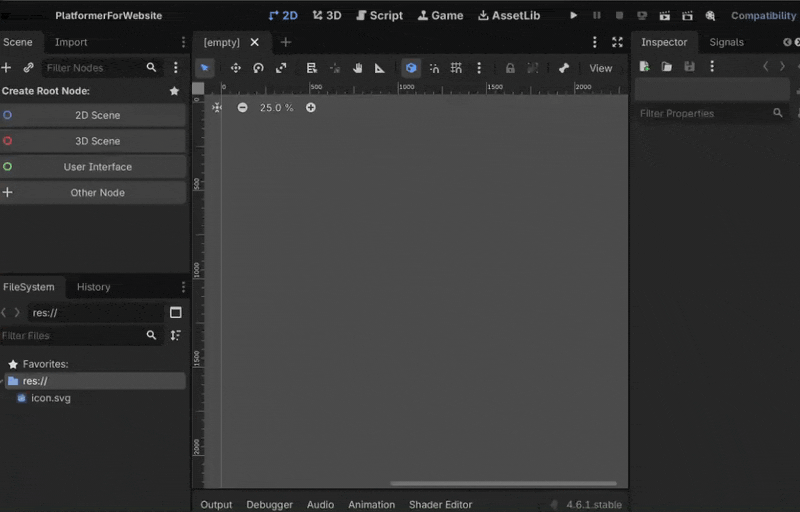
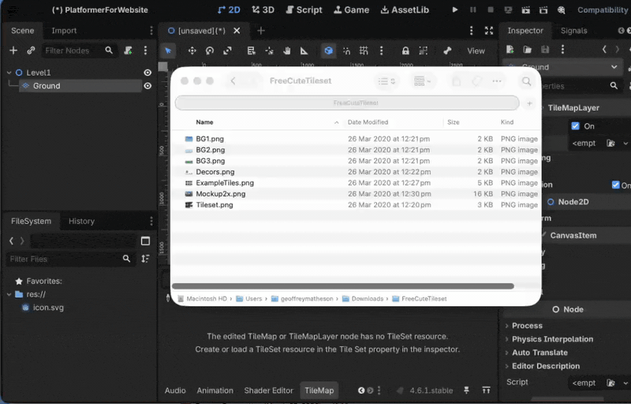
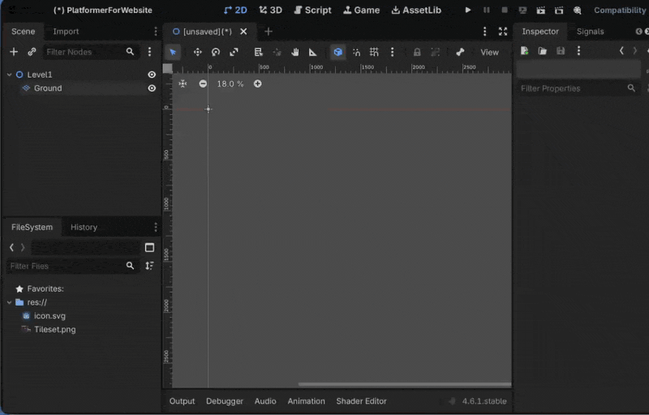
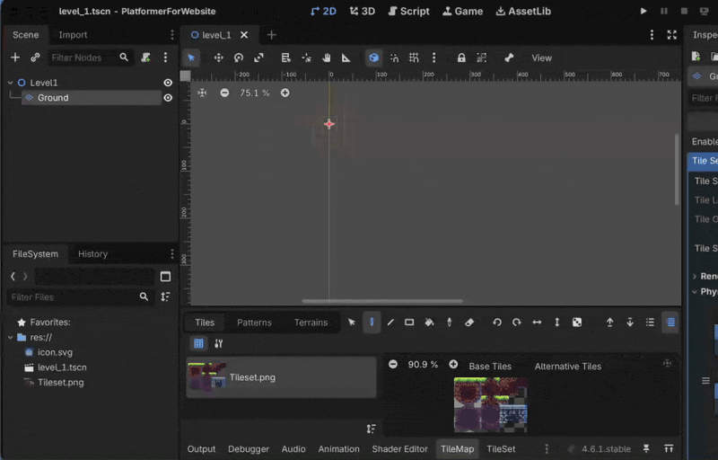
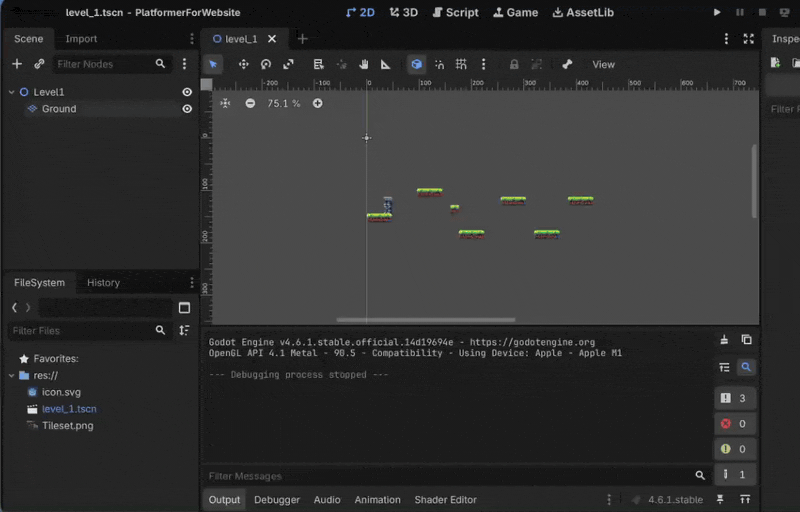
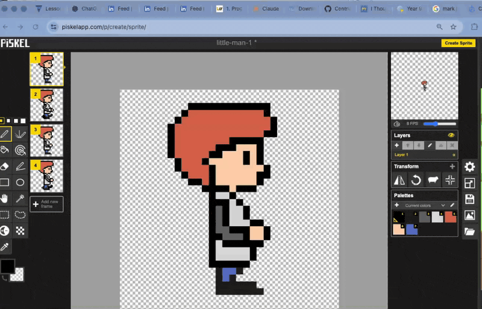

1. Add TileMapLayer
Getting started by adding a 2D Scene root node and a TileMapLayer node to create the level. Call the root node 'Level1' and the TileMapLayer 'Ground'
Working through Godot tasks, one GIF at a time.

Getting started by adding a 2D Scene root node and a TileMapLayer node to create the level. Call the root node 'Level1' and the TileMapLayer 'Ground'

Add a Tileset resource for the TileMapLayer. Note: you first need to have downloaded your tileset image.

Add collision properties to the Tileset so that players don't fall through your blocks

Using the TileMapLayer's painting tools to create a level.

Adding a simple test character to the level to test out the collision properties

Once you have created your pixel art character in Piskel you need to export it as a spritesheet to use in Godot. Important: choose the 'Export' option, then choose 'Spreitesheet file export'
Create an AnimatedSprite2D node for your character and add the spritesheet you exported from Piskel as a SpriteFrames resource.
Modify the CollisionShape2D of your character to fit the new sprite
Create a collectible item for the player to collect. Create a new Area2D node with a Sprite2D and CollisionShape2D as children. Use a simple circle shape for the collision shape and a simple sprite for the collectible.